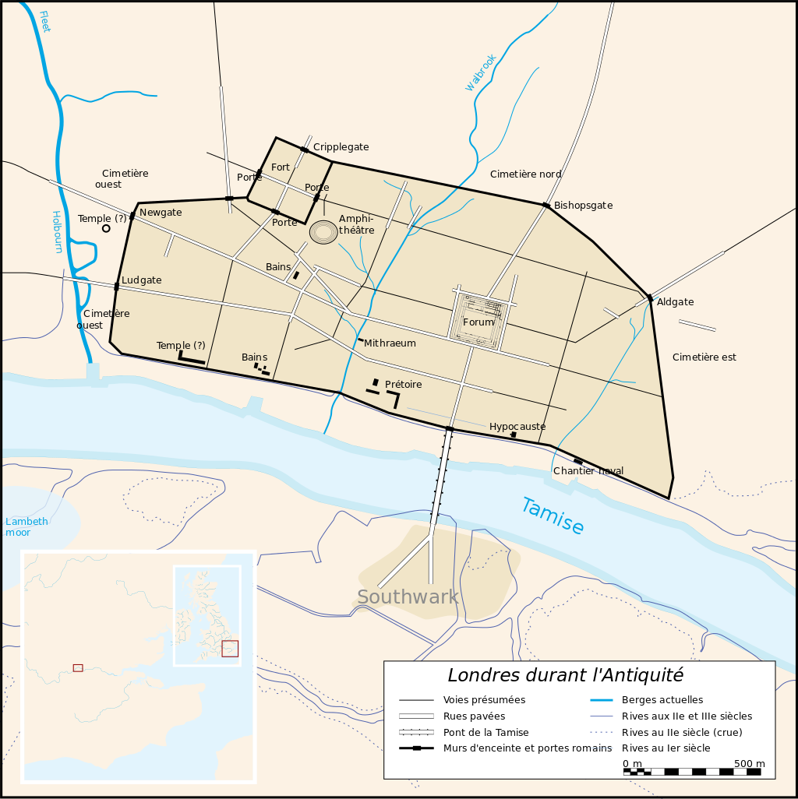
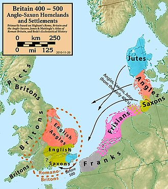
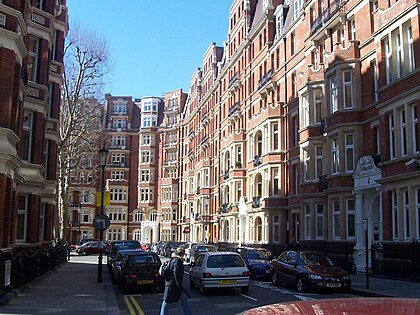
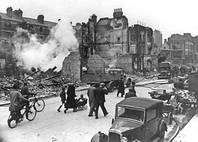

Histoire
Près de deux mille ans d’histoire, de la ville romaine de Londinium à la métropole d’aujourd’hui.
Les origines romaines
Les environs de Londres semblent avoir été habités par des Bretons insulaires depuis la préhistoire, mais aucune trace archéologique n’a été trouvée au nord du pont de Londres, là où la ville est véritablement née. Les plus anciennes traces d’installations durables remontent à l’an 43 et sont dues aux Romains qui, après leur conquête de la Bretagne, y bâtissent une première ville : Londinium.
Le pont de Londres se trouvait au centre du nouveau réseau de routes romaines et était un passage privilégié pour traverser la Tamise. Il a attiré de nombreux commerçants, et Londres est vite devenue un important centre d’échanges, la Tamise permettant d’acheminer facilement les marchandises jusqu’au cœur de la ville. À son apogée, au IIIe siècle, Londinium compte entre 45 000 et 60 000 habitants selon les sources.
Quand l’Empire romain décline, les troupes qui protègent la ville sont rappelées sur le continent et la population diminue. On sait peu de choses de cette période, appelée Dark Ages of London (« les âges sombres de Londres »), mais après le départ des Romains en 410, Londres est en ruine et presque abandonnée au Ve siècle.

L’occupation anglo-saxonne
La position de la ville sur la Tamise en fait un lieu stratégique. Vers l’an 600, les Anglo-Saxons fondent une nouvelle ville, Lundenwic, à environ 1 km en amont de la ville romaine, là où se trouve aujourd’hui Covent Garden. Un port de pêche et de commerce se trouvait probablement à l’embouchure de la rivière Fleet.

Londres médiévale
Après la bataille d’Hastings, le duc de Normandie Guillaume le Conquérant est couronné roi d’Angleterre dans la toute nouvelle abbaye de Westminster, le jour de Noël 1066. Il accorde certains privilèges aux Londoniens tout en construisant, dès la fin de 1066, un château en terre et en bois au sud-est de la ville, pour garder le contrôle de la population.
À sa place, Guillaume bâtira plus tard un énorme donjon : la tour Blanche (White Tower). Agrandi par les rois suivants, ce château sert de résidence royale puis de prison. On le connaît aujourd’hui sous le nom de tour de Londres.

L’époque contemporaine
De 1825 à 1925, Londres est la ville la plus peuplée du monde. Cette croissance est accélérée par la construction des premières lignes de chemin de fer, qui rapprochent les villes voisines. Porté par un essor boursier très rapide, le réseau ferroviaire s’étend et permet à Londres d’englober les villages alentour, comme Kensington.


Le Blitz et la reconstruction
Les bombardements allemands de la Luftwaffe pendant la Seconde Guerre mondiale font environ 30 000 morts et détruisent de nombreuses habitations et bâtiments. La reconstruction des années 1950, 1960 et 1970 se caractérise par une absence d’unité architecturale, typique du Londres moderne.


Galerie